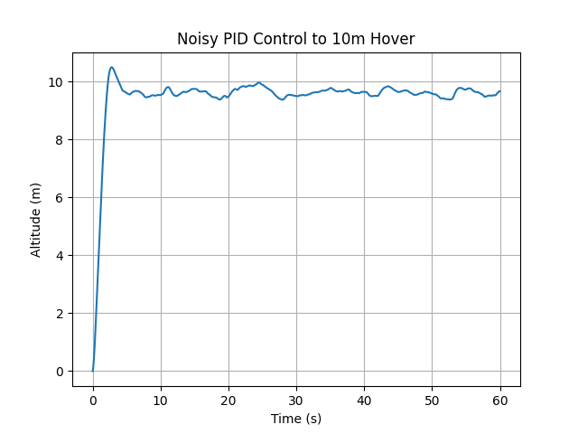
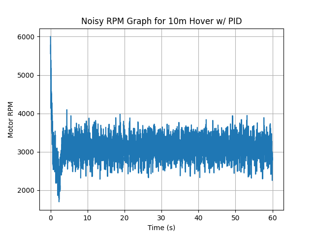
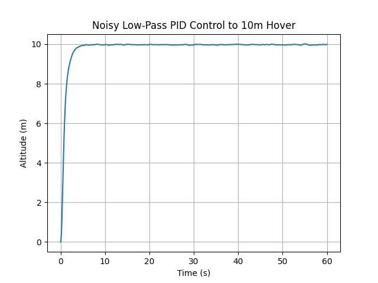

Project Icarus Flight Simulations
Python-based vertical flight simulations for a quadrotor platform — modeling thrust, sensor noise, and PID control to achieve a stable 10 m hover and soft landing.
Overview
This simulation work focuses on the vertical flight dynamics and control algorithms for Project Icarus. The current emphasis is on modeling thrust, adding realistic sensor noise, and tuning PID control to create a smooth three-phase flight: takeoff, 10 m hover, and soft landing.
Key Highlights
- Implemented vertical thrust simulations with autonomous altitude tracking.
- Modeled noisy thrust and RPM measurements and evaluated controller robustness.
- Applied low-pass filtering to stabilize control inputs under measurement noise.
- Designed a three-phase profile: ground → 10 m hover → soft touchdown.
Simulation Gallery
Selected plots from the current simulation pipeline — baseline hover response, noisy PID behavior, and the effect of low-pass filtering on thrust commands.




Results So Far
- Successful simulation of a simple three-phase vertical flight profile.
- PID controller tuned to track a 10 m altitude target in the presence of noise.
- Demonstrated reduction in thrust oscillations after applying low-pass filtering.
Next Steps
- Refine PID gains to minimize overshoot and settling time at 10 m.
- Extend the model to include lateral motion and more realistic actuator limits.
- Deploy and validate the three-phase profile on the physical Icarus platform.
Technical Focus
- Language & Tools: Python, NumPy, Matplotlib.
- Control: PID altitude control with noise-robust tuning.
- Modeling: Vertical thrust dynamics and noisy sensor measurements.
- Signal Processing: Low-pass filtering for smoother control inputs.